Multivariate Time Series Forecasting
1) Data Yüklenmesi
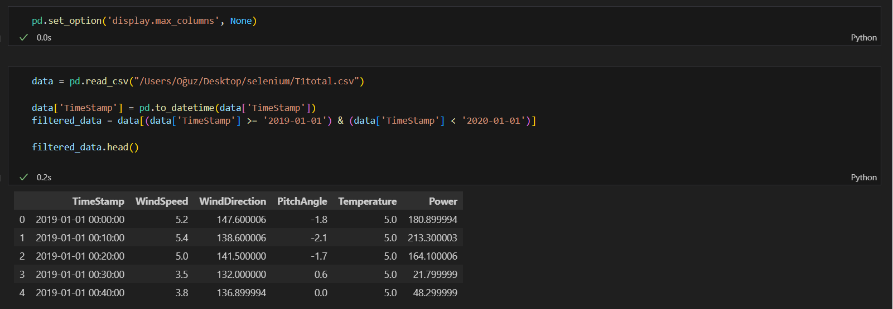
Burda 2019 ve 2020 arasındaki 1 Yıllık veriyi aldım
2) Spesifik Verilerin Seçilmesi
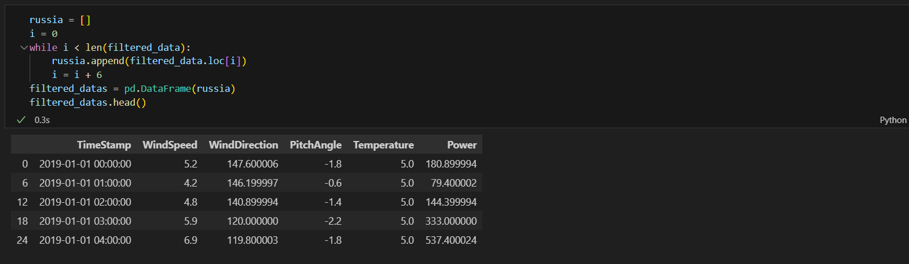
Burda da saatlik verileri seçtim
3) Boş Veriler
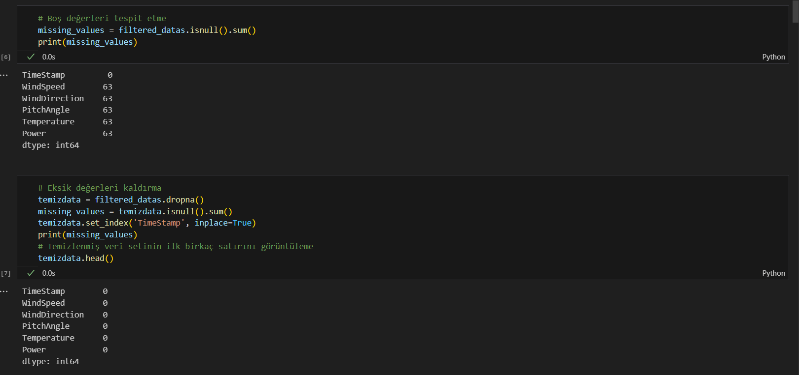
Boş verilerin sayısına baktım. Sayısının az olduğunu görünce de tablodan kaldırmayı seçtim
Aynı zamanda TimeStamp sütununu index olarak atadım
4) Outlier Değerleri Bulma
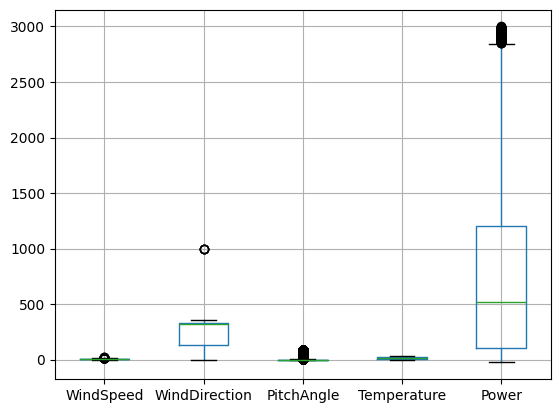
Aykırı değer var mı diye görebilmek için boxplot çizdirdim ve evet var
5) Outlier Değerleri Ele Alma
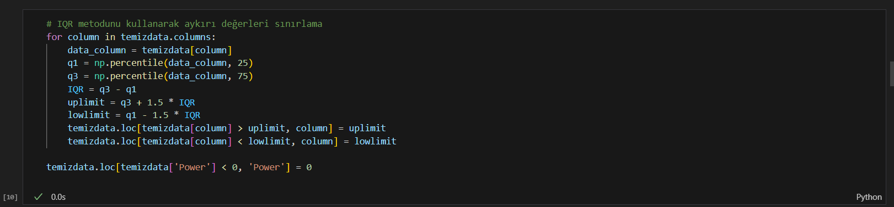
Burda IQR metodunu kullanarak ilk çeyreğini ve ikinci çeyreğini buluyorum. Çeyrekleri kullanarakta üst ve alt limitleri belirledim. Sonrasında bu limitlerin dışında kalan değerleri, bu limitlere eşitledim. Son olarakta Power değeri sıfırdan küçük olanları sıfıra eşitledim
6) Feature Engineering İçin Özellik Ekleme
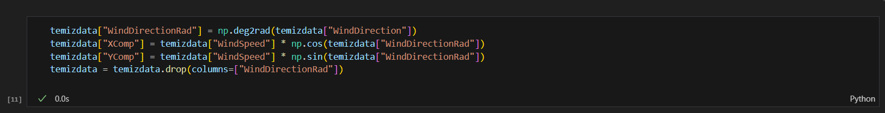
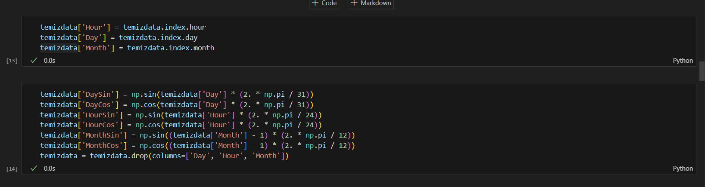
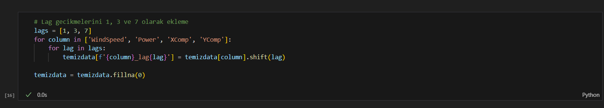
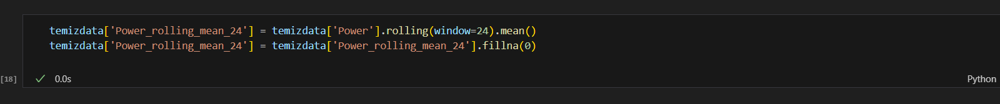
Burda da birden fazla özellik ekledim WindDirection'nın radyanını alıp X ve Y componentlarını ekledim.
Timestamp özelliğini Hour,Day ve Month olarak ayırıp sonra bunların sinüs ve kosinüsünü aldım
Lag gecikmelerini 1-3-7 olarak ekledim.
Power özelliğinin hareketli ortalamasını aldım.
7) Feature Selection
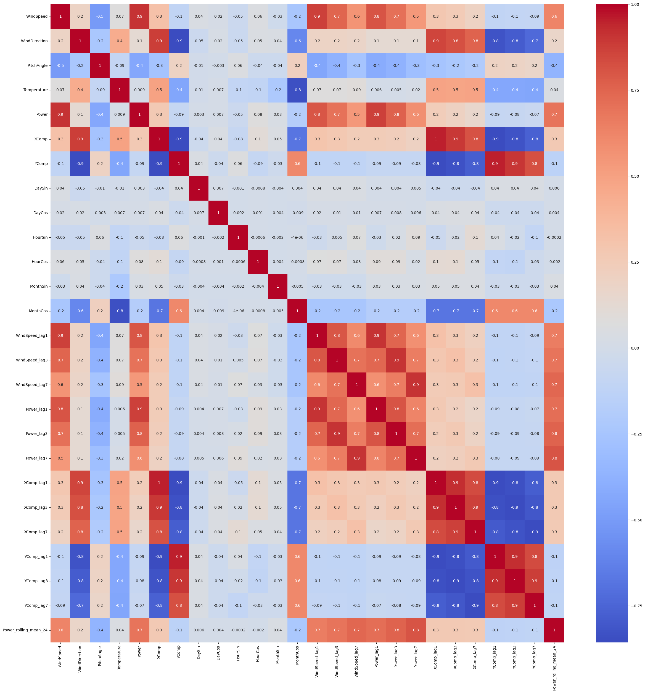
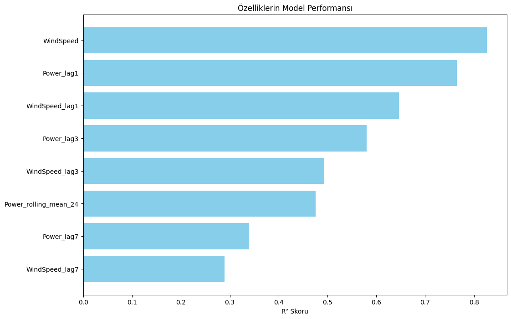
Veri setindeki en iyi özellikleri belirlemek için korelasyon matriksini çıkardım.
Sonrasında verisetindeki özellikleri teker teker test ettirip R2 sonuçlarını aldım ve yüksek olanlarını grafikte gösterdim
Aşağıda kodu bulunuyor
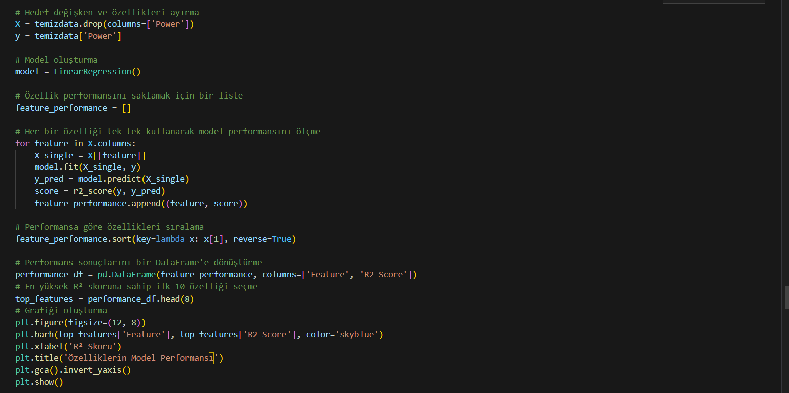
8) Görselleştirme & Analiz
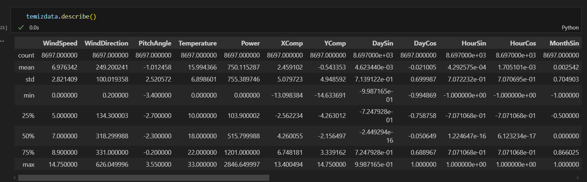
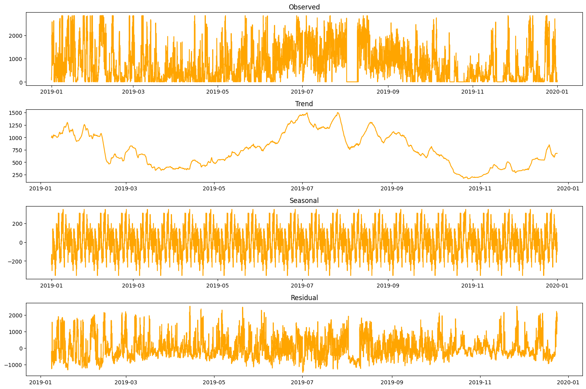
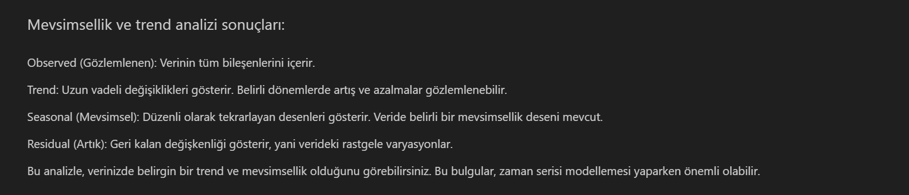
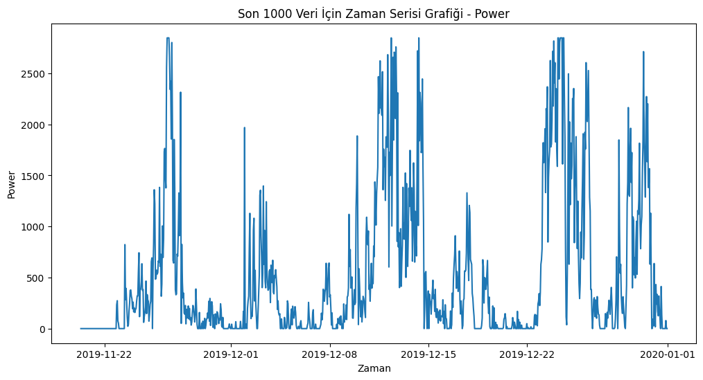
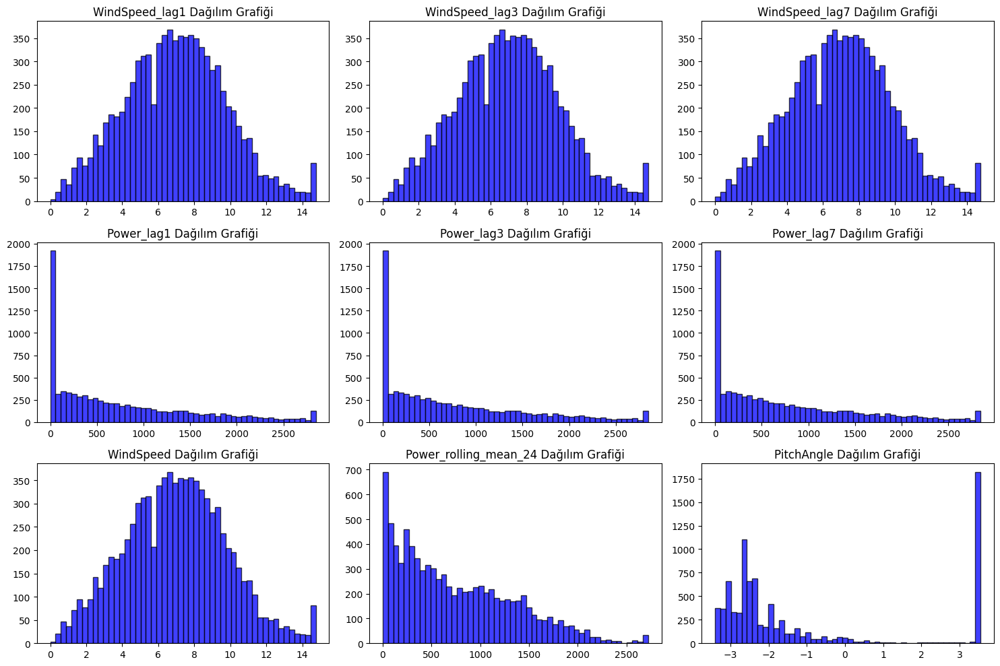
9)Data PreProccess - Data Windowing - Train Test Validation - LSTM
Normalizasyon uyguluyorum
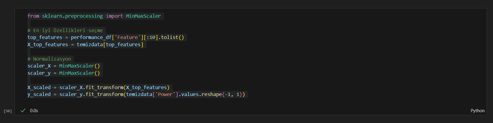
36'ya 6 Data Windowing uyguluyorum
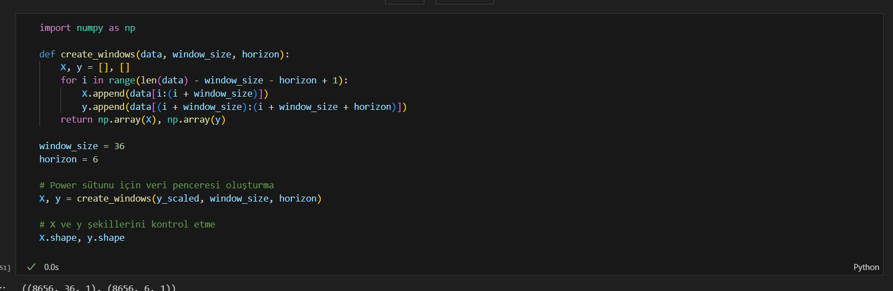
Eğitim ve test verilerine ayırıyorum ve üstüne validation için de eğitim setini eğitim ve validation diye ayırıyorum
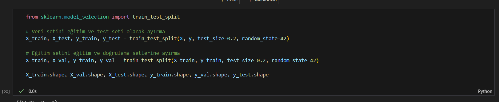
LSTM modeli oluşturuyorum epoch sayısını 200 girdim çünkü en iyi R2 sonucunu onda aldım aynı şekilde batch size 64 kafi
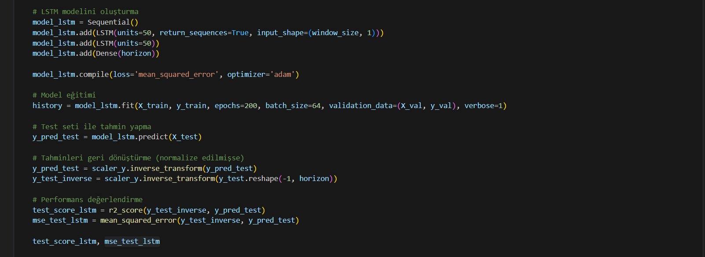
Test sonucu gelen R2 skorum 0.77
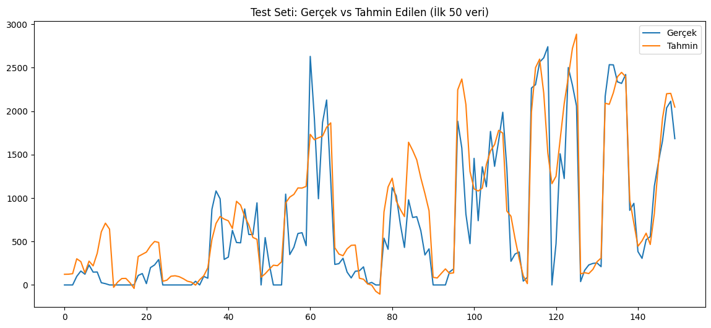